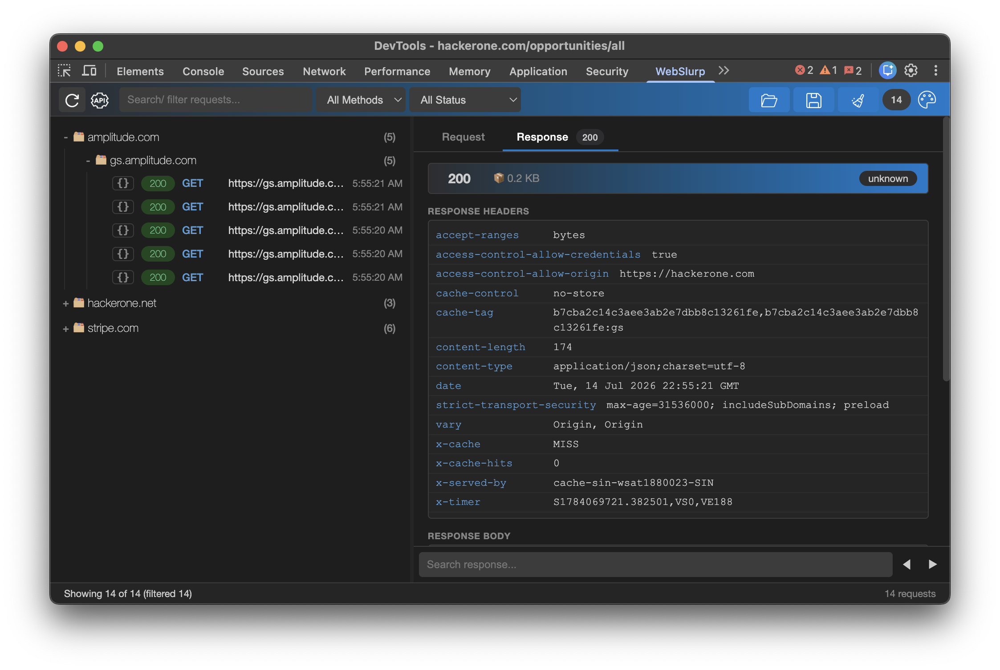
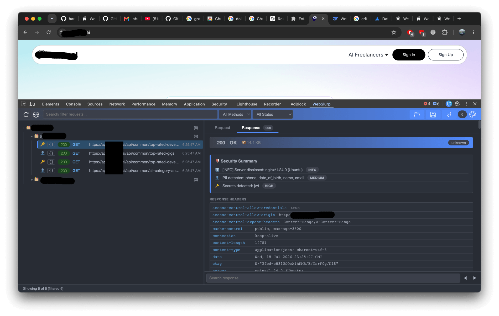
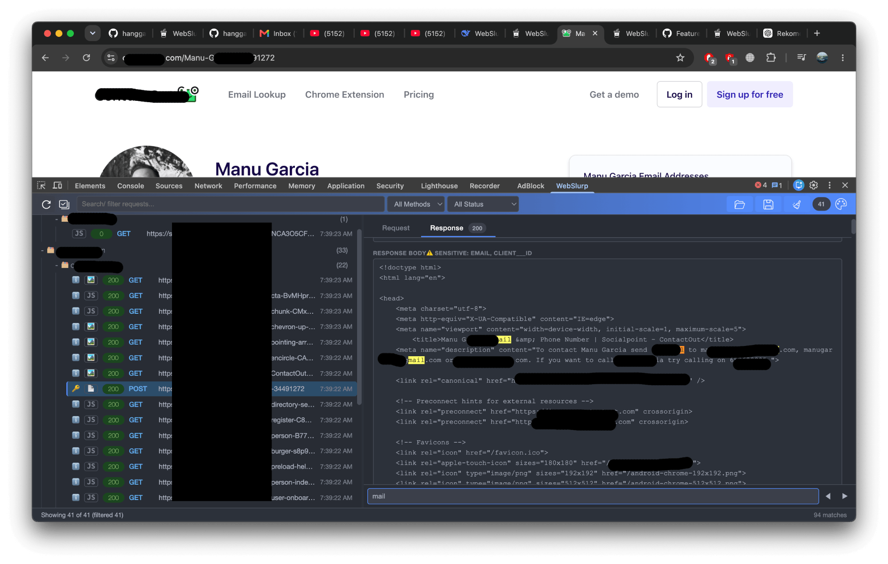
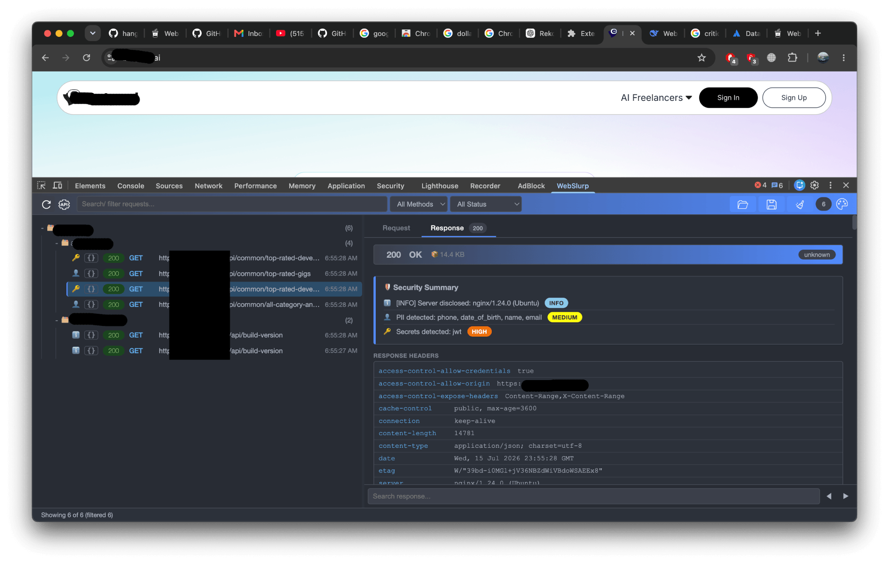

Test API security faster. Capture, modify, and replay HTTP requests directly inside Chrome DevTools—no proxy setup, no context switching.

Click any thumbnail to open the demo. Each video shows a key feature of WebSlurp.
WebSlurp automatically highlights sensitive data—API keys, tokens, emails, phone numbers, and more—so you can spot leaks before they become incidents.



⚡ No extra configuration — it just works
WebSlurp eliminates the copy-paste dance. See how it stacks up against traditional tools.
 |
|||
|---|---|---|---|
| 1 | Open browser | Open browser | Open browser |
| 2 | Inspect → XHR/Fetch | Open Burp Suite | Inspect → WebSlurp |
| 3 | Copy request data | Capture / intercept | Edit request |
| 4 | Open Postman | Edit request | Send request |
| 5 | Build / import | Send request | ✅ Done |
| 6 | Edit request | ||
| 7 | Send request |
Whether you're debugging an API, hunting bugs, or just wondering what an endpoint is actually doing, WebSlurp keeps the requests you care about within easy reach.
Automatically capture XHR & Fetch requests from the active tab, complete with headers, bodies, and the details worth inspecting.
real-timeChange headers, query parameters, body, or authentication, then replay the request with a single click. No copy-paste marathon required. Your Ctrl+C key deserves a break.
flexibleOAuth 2.0, Bearer Tokens, and Basic Auth are built right in, so you can spend less time wrestling with authentication and more time testing the actual API.
built-inAutomatically audit security headers (CSP, HSTS, X-Frame-Options, etc.) and detect secrets, tokens, and PII in API responses. Get actionable insights to harden your API.
automated
Need the request somewhere else? Copy it as curl, cookies included, and take it wherever your terminal leads you.
All captured requests are automatically saved to your browser's local storage. No more lost API calls when you accidentally refresh the page or close DevTools.
persistentWebSlurp is open source and runs straight from the source. No Chrome Web Store (yet)—just clone it, load it, and you're good to go.
git clone https://github.com/hangga/webslurp.git
Navigate to chrome://extensions/ and enable Developer mode.
Click Load unpacked and select the folder containing
manifest.json.
No separate app to configure, no account to create, and no proxy to set up. WebSlurp runs right where you're already working.
|
|||
|---|---|---|---|
| 1 | Download installer from website | Download installer / JAR file | Clone the repo |
| 2 | Run the .exe / .dmg file | Install (requires Java JRE) | Chrome Extensions → Developer mode (enable) |
| 3 | Follow the installation wizard | Accept license & choose directory | Load unpacked |
| 4 | Open the Postman app | Open Burp Suite | Ready to use immediately! |
| 5 | Must Login / Sign Up | Set manual proxy | |
| 6 | Ready to use | Ready to use | |
| ✅ Simplest! |
Found something annoying? Have a cool idea? Open an issue, send a PR, or surprise us. Every contribution makes WebSlurp a little better.
feature/amazing-featureFree forever. Fork it, improve it, break it (preferably not on Friday), then fix it—we're all here to build better tools.
✓ Open SourceIf WebSlurp saves you time or makes API testing a little easier, consider supporting the project. It helps keep WebSlurp maintained, improving, and free for everyone.